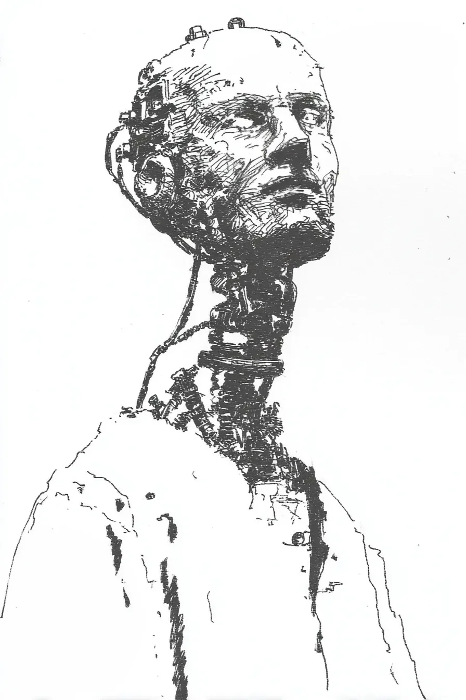

내 머리 뒤편에서 기계음이 울렸고, 나는 내 뇌가 다시 업데이트 중인지 궁금했다.\
My head buzzed from behind, and I wondered if my brain was updating again.
작년에 신경 임플란트를 설치하면서 추가 요금을 내고 광고 없는 프리미엄 서비스를 선택했는데, 오늘만 벌써 다섯 번째 치약 광고가 흘러나왔다.\
When I got the neural implant installed last year, I paid extra for the ad-free premium service, but today alone was already the fifth toothpaste commercial streaming through.
"올해 판매 실적은..."이라고 시작하려던 말이 "건강한 잇몸을 위해 메디클린을 선택하세요!"로 바뀌어 나왔다.\
What began as "This year's sales figures are..." came out as "Choose MediClean for healthy gums!"
상사가 눈썹을 치켜올렸고, 회의실에는 침묵이 흘렀다.\
My boss raised an eyebrow, and silence filled the conference room.
광고가 끝나자 내 입이 다시 움직였는데, 이번에는 탄산음료 광고였다.\
When the ad finished my mouth moved again, this time a carbonated drink commercial.
"환불 요청하세요"라고 말하려 했지만 "청량감이 다른 스파클 콜라"라는 문구만 튀어나왔다.\
I tried to say "request a refund" but only the phrase "refreshment that's different, Sparkle Cola" popped out.
상사가 서류를 덮으며 한숨을 쉬었는데, 그의 손목에 작은 화면이 켜지더니 숫자들이 올라가기 시작했다: 수익 카운터.\
My boss closed the documents and sighed, and a small screen on his wrist lit up as numbers began climbing: revenue counter.